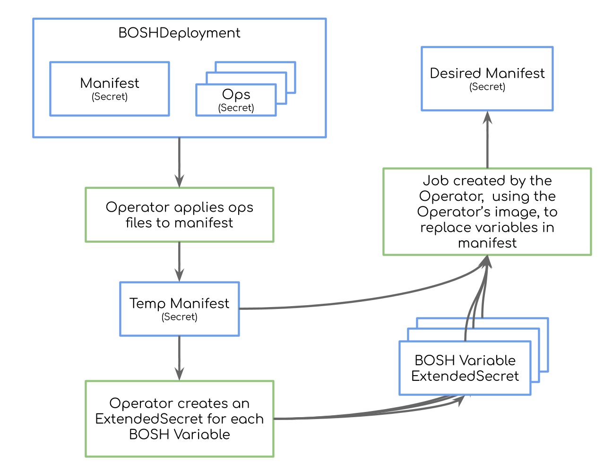

From BOSH to Kubernetes
Guidelines on transforming BOSH concepts to Kubernetes
High-level Direction
- releases are defined in the usual way (a
releases block), but the information given is used to build a reference for a docker image
- each instance group is transformed to an Quarks StatefulSet or an QuarksJob
- each BOSH Job corresponds to one or more containers in the
Pod template defined in the Quarks StatefulSet or the QuarksJob; there’s one container for each process defined in the BPM information of each BOSH Job
- “explicit”
variables are generated using Quarks Secret
- for rendering of BOSH Job Templates, please read “Rendering BOSH templates”
- we have a concept of Desired Manifests
- all communication happens through Kubernetes
Services, which have deterministic DNS Addresses; you can read more about these here
Open Questions
- How do we rename things going from one version to the next?
Missing Features
- Canary support in QuarksStatefulSets
- Missing support for the
allow_executions flag in bpm configs
Deployment Lifecycle
Please read the documentation for the BOSHDeployment controller.
Example Deployment Manifest Conversion Details
1
2
3
4
5
6
7
8
9
10
11
12
13
14
15
16
17
18
19
20
21
22
23
24
25
26
27
28
29
30
31
32
33
34
35
36
37
38
39
40
41
42
43
44
45
46
47
48
49
50
51
52
53
54
55
56
57
58
59
60
61
62
63
64
65
66
67
68
69
70
71
72
73
74
75
76
77
78
79
80
81
82
83
84
85
86
87
88
89
90
91
92
93
94
95
96
97
98
99
100
101
102
103
104
105
106
107
108
109
110
111
112
113
114
115
116
117
118
119
120
121
122
123
124
125
126
127
128
129
130
131
132
133
134
135
136
137
138
139
140
141
142
143
144
145
146
147
148
149
150
151
152
153
154
155
156
157
158
159
160
161
162
163
164
165
166
167
168
169
170
171
172
173
174
175
176
177
178
179
180
181
182
183
184
185
186
187
188
189
190
191
192
193
194
195
196
197
198
199
200
201
202
203
204
205
206
207
208
209
210
211
212
213
214
215
216
217
218
219
220
221
222
223
224
225
226
227
228
229
230
231
232
233
234
235
236
237
238
239
240
241
242
243
244
245
246
247
248
249
250
251
252
253
254
255
256
257
258
259
260
261
262
263
264
265
266
267
268
269
270
271
272
273
274
275
276
277
278
279
280
281
282
283
284
285
286
287
288
289
290
291
292
293
294
295
296
297
298
299
300
301
302
303
304
305
306
307
308
309
310
311
312
313
314
315
316
317
318
319
320
321
322
323
324
325
326
327
328
329
330
331
332
333
334
335
336
337
338
339
340
341
|
---
# The name of the deployment. Replace the name with the name of the BOSHDeployment resource
# It's used to namespace resources created for this deployment.
# Based on docs [1], names should be less than 253 characters. We should limit this to
# characters in the operator, to make sure that with any suffix, we won't go beyond the limit.
name: "foo"
# Not used by the cf-operator.
# A warning is printed in the logs if this is present.
director_uuid: "bar"
# A hash of director features. We could use this to control operator features as well.
features:
# Enable variables to be regenerated by the config server (e.g. CredHub) when the variable options change. Default false.
# In the cf-operator, if an QuarksSecret is changed, (e.g. a new domain is added to a cert),
# the value will be automatically updated.
# The operator won't be able to control this behavior.
# A warning is printed in the logs if this is present.
converge_variables: true
# Randomizes AZs for left over instances that cannot be distributed equally between AZs.
# Not currently used. It's likely that we'll be able to support this.
randomize_az_placement: false
# Enables or disables returning of DNS addresses in links.
# In Kubernetes we always use DNS addresses.
# An error should be returned if this value is set to false.
use_dns_addresses: true
# A list of all releases used in this deployment.
# Required.
# Each release's image reference is constructed from this information like this:
# <url>/<name>:<stemcell.os>-<stemcell.version>-<version>
releases:
# Name of a release used in the deployment.
name: "capi-release"
# The version of the release to be used.
# "latest" is not supported by the cf-operator. An error is thrown if "latest" is used.
version: "1.0"
# Required for the operator. Link to the registry and organization containing the image.
url: "docker.io/cloudfoundry"
# Not used by the cf-operator.
# Integrity of the image itself is handled by whatever
# container runtime and the image registry.
sha1: "332ac15609b220a3fdf5efad0e0aa069d8235788"
# Required by the operator
stemcell:
# OS of the stemcell used by the release. Used to construct the image name.
os: "opensuse"
# Version of the OS of the stemcell used by the release.
version: "42.3"
# Only used by the cf-operator.
# A secret is created with the credentials [2], used by the pods
# that reference this release.
credentials:
username: "foo"
password: "secret"
# Not used by the cf-operator.
# A warning is logged if this is set
stemcells: []
# Specifies how updates are handled
# The cf-operator uses some of these settings.
update:
# The number of pods to deploy in the new version of an QuarksStatefulSet
# Once canaries are running, deployment can continue.
# TODO: Support for canaries needs implementation in QuarksStatefulSet.
canaries: 2
# Time to wait for canary pods to be ready in a new version of an QuarksStatefulSet
canary_watch_time: 100
# The maximum number of non-canary instances to update in parallel for an QuarksStatefulSet.
# TODO: Support for this needs to be implemented in the controller.
max_in_flight: 2
# TODO: is there a need for this in QuarksStatefulSet (in a readiness Probe?)
update_watch_time: 0
# Not used in cf-operator.
# All instance groups are deployed at the same time.
# If set to true, a warning is logged.
serial: false
# Not used in cf-operator.
# If set, a warning is logged.
vm_strategy: ""
# Each instance group is converted into an QuarksStatefulSet
instance_groups:
# Used to name the QuarksStatefulSet or QuarksJob
- name: "api-az1"
# Support for AZs is implemented in the QuarksStatefulSet
azs: ["az1"]
# Number of replicas for the StatefulSets in an QuarksStatefulSet
# If this instance group defines an QuarksJob, this value must be 1. An error is thrown otherwise
instances: 3
# Each job results in a rendered bpm.yml file.
# BPM information is required - the deployment fails if it's missing.
# Each job has one or more processes (defined in bpm.yml), and each corresponds to a container of a pod in a StatefulSet or Job
jobs:
# It's used to name the container
- name: "cloud_controller_ng"
# The name of a release that must exist in the releases block.
# If it doesn't exist in the releases block, an error is thrown.
# The docker image used for the container is resolved using this release name.
release: "capi-release"
# Used by the cf-operator to calculate links before rendering templates.
# All resources in the cf-operator are deterministic (IP addresses are not used),
# So they can be calculated before template rendering occurs.
consumes: {}
# Same as the consumes block above.
provides: {}
# Defines all properties, used to render job templates.
# Job templates are rendered as Secrets, and then mounted into pod containers.
# If a property is changed, the operator runs rendering in an QuarksJob, and the
# template's secret is (re)generated.
# All properties are input to this QuarksJob that does rendering.
# Some properties can reference variables, which can be generated. The cf-operator
# collects values for all properties before starting the rendering process.
properties:
domain: "mycf.com"
admin_password: "((adminpass))"
# Extra information specific to the cf-operator
quarks:
run:
# Hints for pod replica count
scaling:
min: 1
max: 3
ha: 2
# Extra capabilities required by the containers of this job
capabilities: []
# Memory used by each container. Overrides info from vm_resources.
memory: 128
# Number of vCPUs used by each container. Overrides info from vm_resources.
virtual-cpus: 2
# Healthcheck information for the containers in this job.
healthcheck:
some_process_name:
readiness:
exec:
command:
- "curl --silent --fail --head http://${HOSTNAME}:8080/health"
# List of ports to be opened up for this job.
ports:
- name: "health-port"
protocol: "TCP"
internal: 8080
# Not used by the cf-operator.
# A warning is logged if this is set.
vm_type: ""
# Not used by the cf-operator.
# A warning is logged if this is set.
vm_extensions: []
# Used by the cf-operator to limit the resources used by a container in a pod
vm_resources:
# Number of vCPUs used by a container
cpu: 4
# Memory used by a container
ram: 1024
# Used for PVC sizes if `ephemeralAsPVC` is set to true
ephemeral_disk_size: 4096
# Not used by the cf-operator.
# A warning is logged if this is set.
stemcell: ""
# Size of the volume attached to a pod container.
persistent_disk: 4096
# This must be the name of a StorageClass used by the cf-operator to create volumes.
persistent_disk_type: "default"
# Not used by the cf-operator.
# A warning is logged if this key is set.
networks:
# Not used by the cf-operator
- name: "foo"
# Not used by the cf-operator
static_ips: []
# Not used by the cf-operator
default: []
# Specific update settings for this instance group. Use this to override global job update settings on a per-instance-group basis.
update: {}
# TODO: understand how instance group renames can occur in an QuarksStatefulSet or QuarksJob
migrated_from:
- cloud_controller
# This is the key that controls how an instance group is treated by the cf-operator.
# If lifecycle is "service", an QuarksStatefulSet is created for the instance group.
# Otherwise, if it's "errand", an QuarksJob is created. As with normal BOSH, errands have a
# manual trigger, so QuarksJobs have to support this (manual triggers).
# In Kubernetes we also need errands that can run on a trigger. These are not supported by BOSH.
# The lifecycle for such an QuarksJob is "auto-errand".
# Manual triggers are supported by QuarksJobs
lifecycle: "service"
# Deprecated - the cf-operator does not support this key.
# An error is thrown if this is set.
properties: {}
# Usually used for BOSH Agent configuration.
# We can use this hash to control how the operator generates resources, however
# none of the settings used by the Agent are supported by the operator.
env:
# Not used by the cf-operator.
# A warning is logged if this is set.
persistent_disk_fs: "ext4"
# Not used by the cf-operator.
# A warning is logged if this is set.
persistent_disk_mount_options: []
# Not used by the cf-operator.
# A warning is logged if this is set.
bosh [Hash, optional]:
# Not used by the cf-operator.
# A warning is logged if this is set.
password: "foo"
# Not used by the cf-operator.
# A warning is logged if this is set.
keep_root_password: vcap
# Not used by the cf-operator.
# A warning is logged if this is set.
remove_dev_tools: false
# Not used by the cf-operator.
# A warning is logged if this is set.
remove_static_libraries: false.
# Not used by the cf-operator.
# A warning is logged if this is set.
swap_size: 100
# Not used by the cf-operator.
# A warning is logged if this is set.
ipv6:
# Not used by the cf-operator.
# A warning is logged if this is set.
enable: false
# Not used by the cf-operator.
# A warning is logged if this is set.
job_dir:
# Not used by the cf-operator.
# A warning is logged if this is set.
tmpfs: false
# Not used by the cf-operator.
# A warning is logged if this is set.
tmpfs_size: "0m"
agent:
# Not used by the cf-operator.
# A warning is logged if this is set.
tmpfs: false
# Used by the cf-operator to set kubernetes-specific information
# for the resources representing this instance group.
settings:
# Affinity information for this instance group's pod.
# These definitions are merged directly into the pod's definition.
# The structure is the same as the one used by Kube [3].
affinity: {}
# Labels to add to the resources representing the instance group
labels: {}
# Annotations to add to the resources representing the instance group
annotations: {}
# Ops files that are applied on top of instance group properties yaml or BPM data yaml
preRenderOps:
bpm:
- type: replace
path: /foo
value: bar
instanceGroup:
- type: replace
path: /foo
value: bar
# disable_log_sidecar is an option to disable log sidecar
disable_log_sidecar: false
# serviceAccountName is the name of the ServiceAccount to use to run this pod.
serviceAccountName: kubecf
# automountServiceAccountToken indicates whether a service account token should be automatically mounted
automountServiceAccountToken: false
# ImagePullSecrets is an optional list of references to secrets to use for pulling any of the images.
# This field in PodSpec can be automated by setting the imagePullSecrets in a serviceAccount.
imagePullSecrets: {}
# Tolerations and taints are a concept defined in kubernetes to repel pods from nodes. [4]
tolerations: []
# If this is set to true, the operator will define a PersistentVolumeClaim template
# on the QuarksStatefulSet of the instance group, and it will use that PVC for all volume
# mounts for ephemeral disks
ephemeralAsPVC: false
# This sets the backoffLimit for the jobs running errands. If not set, it will use the Kube default which is 6.
# https://kubernetes.io/docs/concepts/workloads/controllers/jobs-run-to-completion/#handling-pod-and-container-failures
jobBackoffLimit: 6
# An array of disks to be mounted on the containers
disks:
# A PersistentVolumeClaim to be used as a template in the StatefulSet of the instance group.
- pvc:
name: foo
storageClassName: persistent
# Volume definition to be included in the pod.
volume:
name: extravolume
emptyDir: {}
# Volume mounts to be set on the containers that match the job and process set in "filters".
volumeMount:
name: extravolume
mountPath: /var/vcap/data/rep
# Filters to identify on which containers to apply the volume mounts.
filters:
job_name: "cflinuxfs3-rootfs-setup"
process_name: "test-server"
# Each addon job is added to the desired manifest before it's persisted
# Not all placement rules are supported, see below for more details.
addons:
# The name of the addon is not used by the operator.
# TODO: investigate whether it's useful to set this in an annotation of the instance group sts/pod
- name: foo
# All jobs are added to instance groups based on placement rules before the desired manifest is persisted
jobs:
- name: metron
release: loggregator-release
properties:
loggregator:
metron:
log_level: debug
include:
# Supported
stemcell:
- os: opensuse
# Not supported, addons are used per-deployment
deployments: []
# Supported
jobs:
name: cloud_controller_ng
release: capi-release
# Supported
instance_groups:
- api
- diego-cell
# Not supported
networks: []
# Not supported
teams: []
# The same matchers are supported as the "include" key
exclude: {}
# Deprecated - the cf-operator does not support this key.
# An error is thrown if this is set.
properties: {}
# For each variable, the cf-operator creates QuarksSecrets
# As with normal BOSH, variables are referenced by job properties.
# Each variable's generated secret is mounted in the container that renders each job's
# templates. They are then used by the rendering process.
# This means that the operator needs to look at the job's properties, and parse any references
# to variables, so it knows what it needs to mount.
variables:
# Unique name used to identify a variable. Used to name the QuarksSecret
- name: "adminPass"
# As with normal BOSH, supported types are certificate, password, rsa, and ssh.
type: "password"
# Specifies generation options
options: {is_ca: true, common_name: "some-ca"}
# Tags are transformed into annotations for the resources created
# by this deployment.
tags:
maintainer: "Philip J. Fry"
|
BPM
In a BOSH release some jobs have BPM configuration in templates/bpm.yml.erb. Each process specified in the BPM configuration is run in a single Kubernetes Container as part of a Pod.
The following subsections describe the mapping of BPM configuration into containers.
Entrypoint & Environment Variables
| Bosh |
Kube Pod Container |
executable |
command |
args |
args |
env |
env |
Resources
| Bosh |
Kube Pod Container |
workdir |
workingDir. Not implemented yet. |
hooks |
initContainers. and container hooks. Not implemented yet. |
process.capabilities |
container.SecurityContext.Capabilities. |
limits |
container.Resources.Limits. Not implemented yet. |
ephemeral_disk |
emptyDir volumes by default, but can be PersistentVolumeClaims if ephemeralAsPVC is set on the bosh.agent.settings. |
persistent_disk |
PersistentVolumeClaims. Not yet implemented. |
additional_volumes |
emptyDir. Paths under /var/vcap/store are currently ignored. |
unsafe.unrestricted_volumes |
emptyDir. Paths under /var/vcap/store are currently ignored. |
unsafe.privileged |
container.SecurityContext.Privileged. |
If you are looking for limits and resource request for BPM processes, “BOSH resource requests and limits”.
Health checks
BPM doesn’t provide information for health checks and relies on monit instead.
CF-Operator provides health checks via the quarks property key in the deployment manifest.
In Kubernetes, we use liveness and readiness probes for healthchecks.
Hooks
BPM supports pre_start hooks. CF-Operator will convert those to additional init containers.
Conversion Details
Calculation of docker image location for releases
Release image tags are immutable.
The release image locations are comprised of multiple elements:
- docker registry URL
- organization and repository
- stemcell name and version
- fissile version
- the release name and version
Release image locations always have to be resolved in the context of an instance group/job because they depend on the stemcell that is being used.
A typical release image location looks could look like hub.docker.com/cfcontainerization/cflinuxfs3-release:opensuse-15.0-28.g837c5b3-30.263-7.0.0_233.gde0accd0-0.62.0.
The different elements are taken from different places in the manifest. Given this excerpt from a BOSH deployment manifest:
1
2
3
4
5
6
7
8
9
10
11
12
13
14
15
16
17
18
|
stemcells:
- alias: default
os: opensuse-42.3
version: 28.g837c5b3-30.263-7.0.0_234.gcd7d1132
instance_groups:
- name: diego-cell
stemcell: default
jobs:
- name: cflinuxfs3-rootfs-setup
release: cflinuxfs3
releases:
- name: cflinuxfs3
version: 0.62.0
url: hub.docker.com/cfcontainerization
sha1: 6466c44827c3493645ca34b084e7c21de23272b4
stemcell:
os: opensuse-15.0
version: 28.g837c5b3-30.263-7.0.0_233.gde0accd0
|
The stemcell information (name, and stemcell and fissile version) are taken from the stemcells entry that matches the instance group’s stemcell alias. The registry URL including the organization, the release name, and the version come from the releases entry that’s referenced from the job.
Note:
Releases can optionally specify a separate stemcell section, in which case the information from the instance group stemcell is overridden.
Variables to Quarks Secrets
For each Explicit BOSH Variable (with a definition in the variables section in the deployment manifest), the cf-operator creates an QuarksSecret.
The QuarksSecret is meant to generate the value required by the variable.
The name of the QuarksSecret is calculated like this:
The name of the final generated Secret (the secretName key of the QuarksSecret) is calculated the same way.
Overriding generated variables
The user can also specify overrides for generated secrets using the vars key in the BOSHDeployment spec.
These map explicit variable names to secret names.
Each secret must contain the usual keys used in explicit variables (see here for more details).
1
2
3
4
5
6
7
8
9
10
11
12
13
14
15
16
17
18
19
20
21
22
23
24
25
26
27
28
29
30
31
32
33
34
35
36
37
38
39
40
41
42
43
44
45
46
47
48
49
50
51
52
53
54
55
56
57
58
59
60
61
62
63
64
65
66
67
68
69
70
71
72
73
74
75
76
77
78
79
80
81
82
83
84
85
86
87
88
89
90
91
92
93
94
95
96
97
98
99
100
101
|
---
apiVersion: v1
kind: Secret
metadata:
name: var-system-domain
type: Opaque
stringData:
value: foo.com
---
apiVersion: v1
kind: Secret
metadata:
name: my-nats-password
type: Opaque
stringData:
password: deadbeef
---
apiVersion: v1
kind: Secret
metadata:
name: my-ca
type: Opaque
stringData:
certificate: "my-ca-cert-data"
private_key: "my-ca-private-key"
is_ca: "true"
---
apiVersion: v1
kind: Secret
metadata:
name: my-cert
type: Opaque
stringData:
certificate: "my-cert-data"
private_key: "my-private-key-data"
is_ca: "false"
ca: "my-ca-cert-data"
---
apiVersion: v1
kind: ConfigMap
metadata:
name: nats-manifest
data:
manifest: |
---
name: nats-deployment
releases:
- name: nats
version: "33"
url: docker.io/cfcontainerization
stemcell:
os: SLE_15_SP1
version: 26.1-7.0.0_374.gb8e8e6af
instance_groups:
- name: nats
instances: 1
jobs:
- name: nats
release: nats
properties:
nats:
user: admin
password: ((nats_password))
domain: ((system_domain))
ca_cert: ((nats_ca.certificate))
ca_key: ((nats_ca.private_key))
cert: ((nats_cert.certificate))
key: ((nats_cert.private_key))
cert_ca: ((nats_cert.ca))
variables:
- name: nats_password
type: password
- name: nats_ca
type: certificate
options:
is_ca: true
common_name: routerCA
- name: nats_cert
type: certificate
options:
ca: nats_ca
common_name: routerSSL
alternative_names:
- "foo.((system_domain))"
- "*.foo.bar"
---
apiVersion: quarks.cloudfoundry.org/v1alpha1
kind: BOSHDeployment
metadata:
name: nats-deployment
spec:
manifest:
name: nats-manifest
type: configmap
vars:
- name: nats_password
secret: my-nats-password
- name: nats_ca
secret: my-ca
- name: nats_cert
secret: my-cert
|
Instance Groups to Quarks StatefulSets and Jobs
BOSH Services vs BOSH Errands
BOSH Services are converted to QuarksStatefulSets and Services.
BOSH Errands are converted to QuarksJobs with trigger.strategy: manually.
BOSH Auto-Errands (supported only by the operator) are converted to QuarksJobs with trigger.strategy: once.
Miscellaneous
Dealing with AZs
QuarksStatefulSets support AZs. You can learn more about this in the controller docs for quarks statefulset.
If you don’t want to use AZs, remove the key. Otherwise AZ names in the BOSH manifest correspond to the “failure-domain.beta.kubernetes.io/zone” labels that are set on the nodes.
Support for active/passive pod replicas
QuarksStatefulSets support active/passive pod replicas. You can learn more about this in the quarks-statefulset docs.
Ephemeral Disks
We use an emptyDir for ephemeral disks. You can learn more from the official docs.
If the setting bosh.settings.agent.ephemeralAsPVC is set to true, the operator will use PersistentVolumeClaims instead.
This option should be used for jobs that make assumptions about ephemeral disks (like this garden job) mounts, or the size limit for the disk is critical.
If vm_resources.ephemeral_disk_size is set, the PVC size will be set to this. If it’s not set, the operator will try to use persistent_disk as a size. If this is not set either, the operator will use a default of 10GB.
Credentials for Docker Registries
Providing credentials for private registries is supported by Kubernetes. Please read the official docs.
Running manual errands
BOSH makes use of errands, which are manually triggered.
We support manual triggers - you can learn more in the QuarksJob docs.
Readiness and Liveness Probes
When the deployment manifest declares health check information for jobs, via the quarks section, we configure those in Kubernetes.
The probes are defined per BPM process.
Example:
1
2
3
4
5
6
7
8
9
10
|
instance_groups:
- name: "api-az1"
process.
properties:
quarks:
run:
healthcheck:
bpm-process-name:
readiness:
liveness:
|
Both keys contain information that should is used as-is for the container that matches the process name.
Persistent Disks
When a BOSH deployment manifest declares persistent disks on instance groups, we provide a persistent volume to the containers of a pod in /var/vcap/store. You can learn more about BOSH Persistent Disks in the BOSH Official Docs.
These volumes are mounted on each container that’s part of the instance group.
The implementation uses the default storage class if not specified using the persistent_disk_type key in the manifest.
Manual (“implicit”) variables
BOSH deployment manifests support two different types of variables, implicit and explicit ones.
“Explicit” variables are declared in the variables section of the manifest and are generated automatically before the interpolation step.
“Implicit” variables just appear in the document within double parentheses without any declaration. These variables have to be provided by the user prior to creating the BOSH deployment as a secret. The secret name has to follow the scheme
By default the variable content is expected in the value key, e.g.
((system-domain))
1
2
3
4
5
6
7
8
|
---
apiVersion: v1
kind: Secret
metadata:
name: var-system-domain
type: Opaque
stringData:
value: example.com
|
It is also possible to specify the key name after a / separator, e.g.
((ssl/ca))
1
2
3
4
5
6
7
8
9
10
|
---
apiVersion: v1
kind: Secret
metadata:
name: var-ssl
type: Opaque
stringData:
ca: ...
cert: ...
key: ...
|
Pre_render_scripts
Similar to what can be achieved in SCF v1, with the patches scripts, the cf-operator is able to support this behaviour. Basically, it allows the user to execute a custom script during runtime of the job container for a specific instance_group. Because patching during runtime is always a great feature to have, for a variety of reasons, users can specify this via the quarks.pre_render_scripts key.
Keep it mind, that the script should belong to a type, to avoid running all scripts as a whole. Currently supported types are:
quarks.pre_render_scripts.bpm.quarks.pre_render_scripts.ig_resolverquarks.pre_render_scripts.jobs
This allows you to run anything, by specifying a list of commands/scripts to execute. For example:
1
2
3
4
5
6
7
8
9
10
11
12
13
14
15
|
instance_groups:
- name: redis-slave
instances: 2
lifecycle: errand
azs: [z1, z2]
jobs:
- name: redis-server
release: redis
properties:
quarks:
pre_render_scripts:
bpm:
- |
touch /tmp
|
BOSH DNS
The BOSH DNS addon is implemented using a separate DNS server (coredns). For each BOSHDeployment, which enables this addon, an additional DNS server is created within the namespace.
The addon is detected by looking at the release field of the addon config, which has to equal ‘bosh-dns-aliases’ or ‘bosh-dns’.
Multiple DNS addons are supported that way, according to the BOSH manifest spec, their names should be unique.
This DNS server rewrites all BOSH dns requests to standard k8s queries (e.g. api.service.cf.internal -> api.<namespace>.svc.cluster.local) and forwards them to the k8s DNS server.
All pods created from the BOSHDeployment are configured to use this DNS server.
Additionally the headless services are created on base of the specified aliases. The following alias
1
2
3
4
5
6
7
|
- domain: blobstore.service.cf.internal
targets:
- deployment: cf
domain: bosh
instance_group: singleton-blobstore
network: default
query: '*'
|
will create a headless service with the name blobstore instead of singleton-blobstore.
For migration purpose, the DNS service does also a rewrite of all previous headless service names
(e.g. singleton-blobstore is rewritten to blobstore.<namespace>.svc.cluster.local).
The DNS handler addon can be used to conditionally forward queries to another server.
The following addon configuration, will forward all queries for the corp.intranet.local zone to the DNS server at ‘10.0.0.2’.
1
2
3
4
5
6
7
8
9
10
11
12
|
addons:
- name: bosh-dns
jobs:
- name: bosh-dns
release: bosh-dns
properties:
handlers:
- domain: corp.intranet.local.
source:
recursors:
- 10.0.0.2
type: dns
|
When specifying the type as “http” or “https”, instead of “dns”, coredns will use DNS over HTTPS (RFC 8484, DOH).
When specifying “tls” DNS over TLS (RFC 7858) will be used to connect to the forwarding server.
Flow

(Source: https://docs.google.com/drawings/d/e/2PACX-1vSsapirEQTlBvFDYjRbCxK5IJaxRqPDfTi37OcBVr60BGbDThn83HeHJyRModicUeghc7enfyYY_CHI/pub?w=1279&h=997)
Naming Conventions
After creating a BOSHDeployment named nats-deployment, with one Instance Group, the following resources should exist:
-
BOSHDeployment
-
QuarksJob
-
QuarksSecret
-
QuarksStatefulSet
-
Secrets
1
2
3
4
5
|
bpm.nats-v1
ig-resolved.nats-v1
var-nats-password
with-ops
desired-manifest-v1
|
-
StatefulSets
-
Pods
-
Services